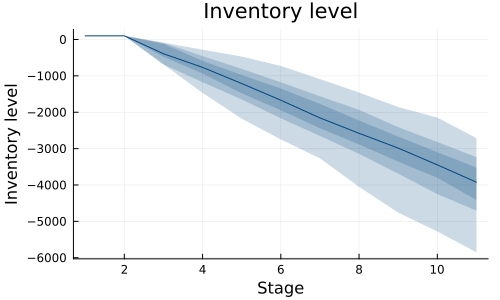
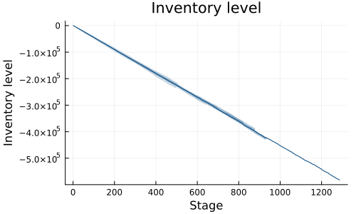

Example: inventory management
This tutorial was generated using Literate.jl. Download the source as a .jl file. Download the source as a .ipynb file.
The purpose of this tutorial is to demonstrate a well-known inventory management problem with a finite- and infinite-horizon policy.
Required packages
This tutorial requires the following packages:
using SDDP
import Distributions
import HiGHS
import Plots
import StatisticsBackground
Consider a periodic review inventory problem involving a single product. The initial inventory is denoted by $x_0 \geq 0$, and a decision-maker can place an order at the start of each stage. The objective is to minimize expected costs over the planning horizon. The following parameters define the cost structure:
\[c\]
is the unit cost for purchasing each unit\[h\]
is the holding cost per unit remaining at the end of each stage\[p\]
is the shortage cost per unit of unsatisfied demand at the end of each stage
There are no fixed ordering costs, and the demand at each stage is assumed to follow an independent and identically distributed random variable with cumulative distribution function (CDF) $\Phi(\cdot)$. Any unsatisfied demand is backlogged and carried forward to the next stage.
At each stage, an agent must decide how many items to order or, equivalently, what the inventory level should be at the beginning of the next stage. The per-stage costs are the sum of the order costs, shortage and holding costs incurred at the end of the stage, after demand is realized. If $x$ represents the inventory level at the beginning of a stage, and $y$ is the level of inventory after ordering, the stage costs are given by
\[c(y-x) + \int_{0}^y h(y-\xi) d\Phi(\xi) + \int_{y}^{\infty} p(\xi - y) d\Phi(\xi).\]
Following Chapter 19 of Introduction to Operations Research by Hillier and Lieberman (7th edition), we use the following parameters: $c=15, h=1, p=15$, and demand follows a continuous uniform distribution between 0 and 800.
x0 = 100 # Initial inventory
α = 0.995 # discount factor
c = 35 # unit inventory cost
h = 1 # unit inventory holding cost
p = 15 # unit order cost
UD = 800 # upper bound for demand
N = 10 # size of sample space
Ω = rand(Distributions.Uniform(0, UD), N);This is a well-known inventory problem with a closed-form solution. The optimal policy is a simple order-up-to policy: if the inventory level is below 741 units, the decision-maker orders up to 741 units. Otherwise, no order is placed. For a detailed analysis, refer to Foundations of Stochastic Inventory Theory by Evan Porteus (Stanford Business Books, 2002).
Finite horizon
For a finite horizon of length $T$, the problem is to minimize the total expected cost over all stages, with a terminal value function given by:
\[v_T(x) = cx.\]
This reflects that at the end of the last stage, the decision-maker can recover the unit cost for each leftover item while incurring any backlog costs and shortage penalties from the previous period.
T = 10 # number of stages
model = SDDP.LinearPolicyGraph(
stages = T + 1,
sense = :Min,
lower_bound = 0.0,
optimizer = HiGHS.Optimizer,
) do sp, t
@variable(sp, x, SDDP.State, initial_value = x0)
@variable(sp, y, SDDP.State, initial_value = x0)
@constraint(sp, y.out >= x.out)
@constraint(sp, con_balance, x.out == y.in)
if t == 1
@stageobjective(sp, 0)
elseif t == T + 1
@stageobjective(sp, α^(t - 1) * (-c * x.in))
else
@stageobjective(
sp,
α^(t - 1) * (
p * UD / 2 + (c - p) * y.in - c * x.in + (h + p) / (2 * UD) * y.in^2
)
)
SDDP.parameterize(ω -> JuMP.set_normalized_rhs(con_balance, -ω), sp, Ω)
end
return
endA policy graph with 11 nodes.
Node indices: 1, ..., 11
Train and simulate the policy:
SDDP.train(model; iteration_limit = 100)
simulations = SDDP.simulate(model, 200, [:y])
objective_values = [sum(t[:stage_objective] for t in s) for s in simulations]
μ, ci = round.(SDDP.confidence_interval(objective_values, 1.96); digits = 2)
lower_bound = round(SDDP.calculate_bound(model); digits = 2)
println("Confidence interval: ", μ, " ± ", ci)
println("Lower bound: ", lower_bound)-------------------------------------------------------------------
SDDP.jl (c) Oscar Dowson and contributors, 2017-24
-------------------------------------------------------------------
problem
nodes : 11
state variables : 2
scenarios : 1.00000e+09
existing cuts : false
options
solver : serial mode
risk measure : SDDP.Expectation()
sampling scheme : SDDP.InSampleMonteCarlo
subproblem structure
VariableRef : [5, 5]
AffExpr in MOI.EqualTo{Float64} : [1, 1]
AffExpr in MOI.GreaterThan{Float64} : [1, 1]
VariableRef in MOI.GreaterThan{Float64} : [1, 1]
VariableRef in MOI.LessThan{Float64} : [1, 1]
numerical stability report
matrix range [1e+00, 1e+00]
objective range [1e+00, 3e+01]
bounds range [0e+00, 0e+00]
rhs range [2e+02, 8e+02]
-------------------------------------------------------------------
iteration simulation bound time (s) solves pid
-------------------------------------------------------------------
1 9.277583e+05 9.264283e+05 3.192806e-02 103 1
38 6.642058e+05 1.159526e+06 1.046074e+00 3914 1
77 8.999087e+05 1.274397e+06 2.065803e+00 7931 1
100 7.661532e+05 1.320371e+06 2.676061e+00 10300 1
-------------------------------------------------------------------
status : iteration_limit
total time (s) : 2.676061e+00
total solves : 10300
best bound : 1.320371e+06
simulation ci : 7.852787e+05 ± 3.892416e+04
numeric issues : 0
-------------------------------------------------------------------
Confidence interval: 778589.71 ± 25658.76
Lower bound: 1.32037064e6Plot the optimal inventory levels:
SDDP.publication_plot(
simulations;
title = "Inventory level",
xlabel = "Stage",
ylabel = "Inventory level",
) do data
return data[:y].in
end
Infinite horizon
For the infinite horizon case, assume a discount factor $\alpha=0.995$. The objective in this case is to minimize the discounted expected costs over an infinite planning horizon.
model = SDDP.PolicyGraph(
SDDP.UnicyclicGraph(α; num_nodes = 1);
sense = :Min,
lower_bound = 0.0,
optimizer = HiGHS.Optimizer,
) do sp, t
@variable(sp, x, SDDP.State, initial_value = x0)
@variable(sp, y, SDDP.State, initial_value = x0)
@constraint(sp, y.out >= x.out)
@constraint(sp, con_balance, x.out == y.in)
@stageobjective(
sp,
p * UD / 2 + (c - p) * y.in - c * x.in + (h + p) / (2 * UD) * y.in^2
)
SDDP.parameterize(ω -> JuMP.set_normalized_rhs(con_balance, -ω), sp, Ω)
return
endA policy graph with 1 nodes.
Node indices: 1
Train and simulate the policy:
SDDP.train(model; iteration_limit = 100)
simulations = SDDP.simulate(model, 200, [:y])
objective_values = [sum(t[:stage_objective] for t in s) for s in simulations]
μ, ci = round.(SDDP.confidence_interval(objective_values, 1.96); digits = 2)
lower_bound = round(SDDP.calculate_bound(model); digits = 2)
println("Confidence interval: ", μ, " ± ", ci)
println("Lower bound: ", lower_bound)-------------------------------------------------------------------
SDDP.jl (c) Oscar Dowson and contributors, 2017-24
-------------------------------------------------------------------
problem
nodes : 1
state variables : 2
scenarios : Inf
existing cuts : false
options
solver : serial mode
risk measure : SDDP.Expectation()
sampling scheme : SDDP.InSampleMonteCarlo
subproblem structure
VariableRef : [5, 5]
AffExpr in MOI.EqualTo{Float64} : [1, 1]
AffExpr in MOI.GreaterThan{Float64} : [1, 1]
VariableRef in MOI.GreaterThan{Float64} : [1, 1]
numerical stability report
matrix range [1e+00, 1e+00]
objective range [0e+00, 0e+00]
bounds range [0e+00, 0e+00]
rhs range [2e+02, 8e+02]
-------------------------------------------------------------------
iteration simulation bound time (s) solves pid
-------------------------------------------------------------------
┌ Warning: Found a cut with a mix of small and large coefficients.
│ The order of magnitude difference is 10.005906830214101.
│ The smallest cofficient is 0.0.
│ The largest coefficient is 1.0136938932783587e10.
│
│ You can ignore this warning, but it may be an indication of numerical issues.
│
│ Consider rescaling your model by using different units, e.g, kilometers instead
│ of meters. You should also consider reducing the accuracy of your input data (if
│ you haven't already). For example, it probably doesn't make sense to measure the
│ inflow into a reservoir to 10 decimal places.
└ @ SDDP ~/work/SDDP.jl/SDDP.jl/src/plugins/bellman_functions.jl:68
1 3.221838e+10 1.694961e+10 1.168012e+00 3970 1
2 3.075590e+10 2.508265e+10 2.474737e+00 7951 1
3 4.188401e+10 3.461947e+10 3.936885e+00 12086 1
5 4.639655e+10 4.145625e+10 6.592339e+00 18739 1
7 1.053531e+10 4.145625e+10 7.907623e+00 21509 1
10 7.112914e+10 9.751671e+10 1.553424e+01 36961 1
14 1.128588e+11 1.010465e+11 2.369178e+01 49013 1
17 2.529038e+10 1.010465e+11 3.026359e+01 58987 1
21 1.219371e+10 1.010465e+11 3.621950e+01 65660 1
25 1.425569e+10 1.010465e+11 4.198598e+01 72058 1
29 1.570352e+10 1.010465e+11 4.751969e+01 78060 1
33 1.060937e+10 1.010465e+11 5.478124e+01 86174 1
35 1.691677e+10 1.010465e+11 6.033943e+01 92090 1
40 2.792559e+10 1.010465e+11 6.727806e+01 100555 1
45 2.501997e+08 1.010465e+11 7.259210e+01 106776 1
48 2.177706e+08 1.062048e+11 7.817310e+01 114572 1
51 4.712886e+10 1.062048e+11 8.502302e+01 123138 1
54 1.075144e+09 1.062048e+11 9.120805e+01 129218 1
56 4.315637e+09 1.062048e+11 9.683200e+01 133847 1
60 2.475815e+08 1.062048e+11 1.022859e+02 139640 1
63 2.680930e+10 1.062048e+11 1.078765e+02 144994 1
68 5.474070e+10 1.062048e+11 1.165056e+02 153239 1
73 1.596421e+10 6.811916e+11 1.481515e+02 178369 1
80 8.562426e+11 6.811916e+11 1.886068e+02 201143 1
86 2.238137e+10 6.811916e+11 2.216487e+02 213666 1
93 2.211750e+10 6.811916e+11 2.603392e+02 226727 1
99 2.497101e+11 6.811916e+11 2.950645e+02 239118 1
100 2.472307e+10 6.811916e+11 3.057060e+02 242802 1
-------------------------------------------------------------------
status : iteration_limit
total time (s) : 3.057060e+02
total solves : 242802
best bound : 6.811916e+11
simulation ci : 5.530691e+10 ± 5.966968e+10
numeric issues : 0
-------------------------------------------------------------------
Confidence interval: 4.004995822741e10 ± 1.867261168888e10
Lower bound: 6.8119160600243e11Plot the optimal inventory levels:
SDDP.publication_plot(
simulations;
title = "Inventory level",
xlabel = "Stage",
ylabel = "Inventory level",
) do data
return data[:y].in
end